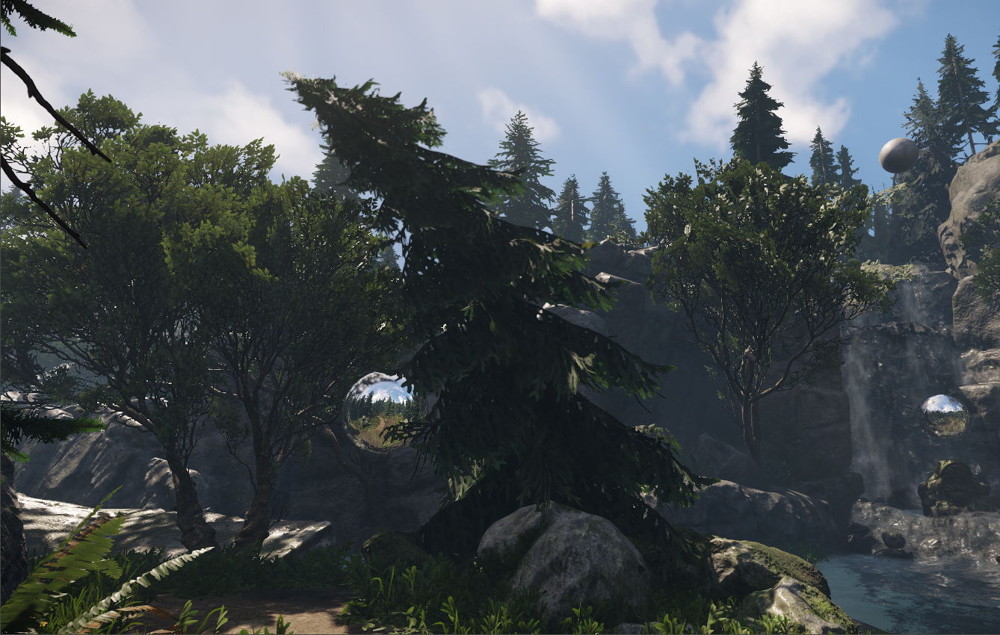
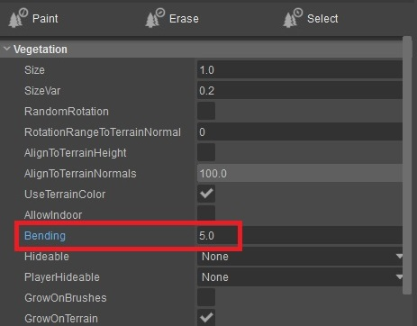
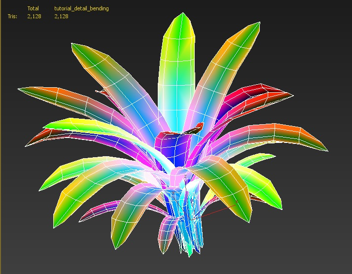
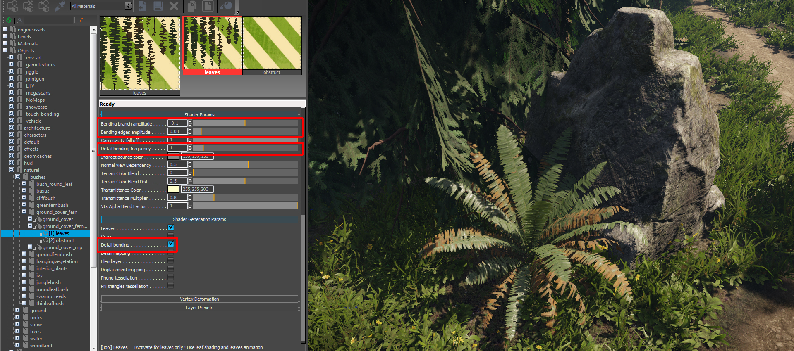
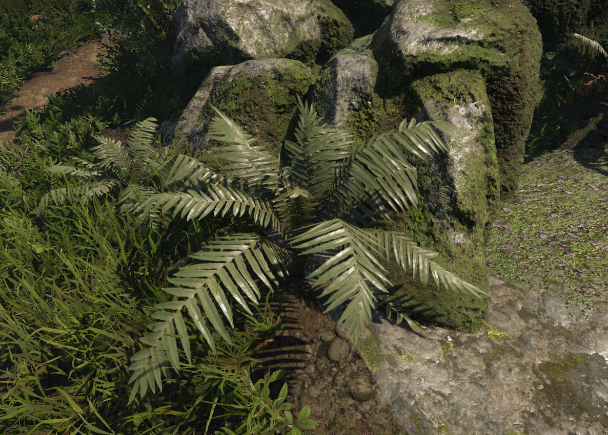
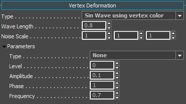

Overview
Detail bending allows us to simulate movement of the vegetation leaves. It enables an effect that allows the leaves to move gently in the wind. This is controlled through multiple layers of vertex painting (Pic3) using different RGB colors on the asset itself. Each vertex color value used has a specific task within the geometry to simulate different movement types.
For more information about using the Vegetation Editor in CRYENGINE, please refer HERE.
The rest of this overview page will describe the types of wind bending that we support in the engine. It's a good practice to know where and when you should use each type.
Types of Wind Bending
Before we start going in depth into Detail Bending, we should mention the types of wind bending that CRYENGINE has to offer for vegetation objects and how they affect each other. The following list outlines the different types of wind bending in CRYENGINE:
- Vegetation object Bending
- Detail Bending
- Vertex Deformation
Vegetation Object Bending

Pic1: Spruce tree with Bending set to an extreme value
This is a single value that can be changed within the object properties of vegetation objects. Bending allows the vegetation objects to bend back and forth using their pivot as origin for this process. This method only allows to bend the complete object and just in one directional axis set through the Wind vector. The intensity is also tied to the Wind vector and the Breeze Generation. This value needs to be activated in order for Detail Bending to be active.
Avoid using high bending values since it breaks the illusion effect and the object becomes clearly unrealistic at extreme values. (See Pic1).
Limitations of Vegetation Object Bending:
- Works only for vegetation objects.
- Tied to the global Wind vector and Breeze generation.
- Only activates with a value > Zero.

Pic2: Bending value within vegetation properties
Detail Bending

Pic3: Vertex colored fern bush asset for Detail Bending
Detail Bending works through reading the vertex color where all three color channels affect certain types of vertex movement. This allows for precise movement based on the vertex information. This system uses the world space for its movement. It can be accessed through your Shader Generation Params in your material.
Limitations of Detail Bending:
- Works only for vegetation objects and geom entities.
- Tied to the global Wind Vector only.
Control options accessed through the CRYENGINE material Shader Params:
Shader Param | Effect |
|---|---|
| Bending branch amplitude | Amplitude of general and regular movement, controls the entire branch's up / down movement. |
| Bending edges amplitude | Amplitude of random noise micro bending (effects the outer edge of the leaves). |
| Detail Bending frequency | Controls the frequency of the branch and edge amplitudes (Above). |
Control options through vertex Color (painted in the DCC tool):
Color | Effect |
|---|---|
| Blue | General regular movement intensity up and down. |
| Red | Controls the irregular small movement of the leaf edges. |
| Green | Movement time offset. Through using different green values (0 - 255), the movement effect starts at a different time. This breaks up all the leaves moving in sync with each other, creating a more natural look. |
Tips for Asset Preparation
When preparing your asset to take advantage of the detail bending, you must set these options to enable the detail bending.
Detail Bending does not work with a Bending value of 0 in its vegetation object properties. Use values of > 0 to enable detail bending.
Detail Bending only work with Leaves or Grass activated in the material settings.

Pic4: Detail Bending properties in the assets material
Vertex Deformation

Pic5: Fern bush with Vertex Deformation applied to it
Vertex Deformation works through different global algorithms and affects objects based on the material used. This does not allow individual control within the object's vertices compared to Detail Bending. It should still be considered for vegetation objects since the movement looks more realistic especially when using the Sin Wave and Sin Wave using vertex color Type active. Sin Wave using vertex color allows more control on where the vertex movement should happen and how intense it should be.
Contrary to how Detail Bending deforms geometry, Vertex Deformation takes the object's UV Z axis as a reference point to move vertices up and down according to the set algorithm. This feature can be accessed through your material properties.
Where you can use it
- Works on all types of geometry objects like brushes, vegetation objects, and geom entities etc (since it's a material extension).
- Only Sin Wave and Sin Wave using vertex color recommended for vegetation.

Pic6: Vertex Deformation properties in the material
Control accessed through the materials Shader Params:
Property | Description |
|---|---|
| Wave Length | Wave deformation scale. |
| Level | Intensity of the geometry offset on UV shell basis. |
| Amplitude | Intensity for the geometry deformation. |
| Phase | Noise offset. |
| Frequency | Movement speed. |
Control through vertex color while using Sin wave with vertex color:
Color | Description |
|---|---|
| Black | Off - Deactivate vertex deformation. |
| White | On - Activate vertex deformation. |
| Grey | A less intense version of the full white. It does not scale with the RGB value, but acts a midway point between Black and White. |
Vertex Deformation can be combined with Detail Bending.
Vertex Deformation overrides the Bending that you set in the vegetation tool (Wind Bending comes from the global wind vector).
Now we have covered the different types of bending that are supported in CRYENGINE.
Tutorials
We shall continue on to the asset setup in 3dsMax and Maya, to take advantage of the Detail Bending technology. Or you can jump straight to the CRYENGINE section of the tutorial.